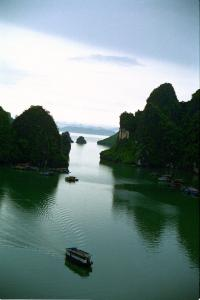

|
Jeudi 28 juin
Sept heures, c'est parti pour ce que tout le monde nous prédit être le couronnement
de notre séjour à Hanoï: la baie d'Along. Voici le programme de notre troisième
visite organisée. Aujourd'hui, bus jusqu'à Along City (4 heures avec l'arrêt
traditionnel à la boutique bien sûr...). Puis mini-croisière d'environ 5 heures
dans la superbes baie pour atteindre l'île de Cat Ba où nous dormirons. Demain,
"trek", autrement dit balade à travers Cat Ba, 12 km avec 6 montagnes à passer.
Et après-demain, retour par bateau puis bus.
Le bus est immense, et... trop plein. On est obligé de virer quelques participants!
Arrivé à la baie, tout le monde à la cantoche! On se serre les coudes pour pouvoir
tous s'attabler et le festin commence. Puis c'est le moment tant attendu, on
grimpe sur le bateau. (Là encore il a fallu recaser du monde sur un autre!).
Et c'est parti! Le temps est brumeux, ce qui rend l'atmosphère magique. On s'enfonce
entre les énormes rochers tantôt arides et déchiquetés tantôt recouverts de
végétation. Ils sont majestueux et la grisaille du ciel les rend mystérieux.
On croise quelques maisons flottantes, puis carrément un village flottant avec
chiens, antennes télé, hamacs, terrasses, des élevages d'huîtres perlières,
des pêcheurs. Les blocs de pierres ne sont peut-être pas habités (sauf exceptions)
mais ça n'empêche pas la mer de Chine de l'être.
Visite d'une magnifique grotte en cours de route. Puis arrivée à Cat Ba. Le
port est magnifique avec des dizaines de bateaux, de maisons flottantes et de
coquilles de noix qui servent de barques.
Vendredi 29 juin
Pour démarrer la journée doucement, visite d'une grotte qui a servi d'hôpital
pendant la guerre du Vietnam. Impressionnant et glaçant.
Puis c'est parti pour une balade de 12 km dans la montagne. Qu'on nous avait
dit... Peu après le départ, on croise 2 énormes araignées de la taille de ma
main, le corps épais comme mon pouce... On comprend vite pourquoi le guide avait
dit: "Ne sortez pas du chemin"... Puis on commence à grimper la première montagne.
Il y en a 6 au programme. C'est un peu abrupt mais tout à fait faisable. En
la redescendant sur l'autre flanc, j'étrenne la première chute! Le sentier boueux
après la pluie, ça glisse... Puis, il faut traverser un ruisselet! On fait tous
plein d'efforts et d'étirements pour le passer sur des roches sans se mouiller
les pieds et on se sort fièrement indemne de l'opération. Puis il tombe une
bonne averse. Bon, ça arrive... De toute façon, on est déjà complètement trempé
de transpiration! Ca nous rince! Puis une personne abandonne, trop dur. De fait,
la balade s'est vite transformée en escalade dans la boue (merci la pluie!)
et les descentes de montagnes (faut bien redescendre après avoir grimpé, c'est
donc bête comme dirait Lionel, pourquoi monter y a qu'à aller tout droit, c'est
bien moins fatigant...) sont devenues très délicates, transformées en vrais
toboggans dans les rochers acérés... Puis, le guide doit tailler le chemin au
coupe-coupe car -avec la pluie- la végétation pousse très vite! Enfin, on fait
une pause vers 13 heures mais ce n'est pas le casse-croûte! Sandwiche à la banane...
ça donne des ailes! On est au milieu du trajet et déjà complètement transpirants
et dévorés par les moustiques entre le haut de la chaussette bien tirée et le
genoux! Si on avait su, on aurait mis des bas.
La jungle traversée est magnifique et souvent tellement dense que même un lapin
aurait du mal à s'y frayer un chemin (sans exagérer)! Partout d'immenses arbres,
des lianes, des troncs torturés sinueux, des feuilles géantes, des sauterelles
rondes, des grenouilles croassant, des insectes qui font le bruit d'une scierie,
etc. Bref, immersion dans l'univers de Tarzan.
Après avoir traversé 2 ou 3 rivières avec de l'eau jusqu'aux genoux... super
les chaussures de marches après ça...floc...floc... et descendu 1km de rocaille
boueuse où Lionel s'étale sur les fesses avec la petite Magalie (7 ans!) dans
les bras sans la lâcher (elle avait bien du mal à descendre avec ses petites
jambes et ça glissait trop mais ça ne l'a pas empêchée de gronder Lionel "sans
toi, j'étais pas encore tombée") On se croit sauvé, les 6 montagnes étant avalées.
Il est 16h00, l'heure du déjeuner... On se croit donc arrivé au bout de nos
peines quand... une rivière remplace le chemin! Elle est tout simplement (et
pas qu'un peu) sortie de son lit à cause des pluies. On se fait 100 mètres dans
l'eau jusqu'à... la taille... hé oui, passant sous un tunnel, puis sur un pont
qui est sous l'eau! Bref, si on avait su, on aurait sauté à pieds joints dans
le tout premier ruisselet de la journée plutôt que de déployer de si grands
efforts à éviter de se mouiller le bout des chaussures... Après ça, encore 2
ou 3 rivières à traverser dont une avec un fort courant dans laquelle 2 ou 3
se sont retrouvés assis! Victoire! Nous arrivons enfin à la mer après avoir
traversé bravement l'île. Là, on embarque à 9 sur une coquille de noix, les
fesses dans l'eau tant elle s'enfonce sous notre poids et écopant sans interruption
pour éviter l'inondation et le naufrage. Mais après, la récompense: baignade
et décrassage au milieu des montagnes déchiquetées dans la mer de Chine. Quelle
sacrée balade "tranquille". Ce soir, lessive intégrale, on est couvert de boue!
Samedi 30 juin
Retour vers Hanoï avec une petite pause avec le bateau en pleine mer de Chine
pour se baigner. L'eau est verte et presque trop chaude, mais c'est quand même
excellent de sauter du haut du bateau et de faire un gros plouf! Le soir, on
est rétamé et en plus, Lionel a mal aux fesses!
Suite du voyage : Adieu Hanoï
|
Vietnam
Halong
|
Vietnam
Halong
|

Vietnam
Halong
|
Vietnam
Halong
|
Vietnam
Halong
|
|
|